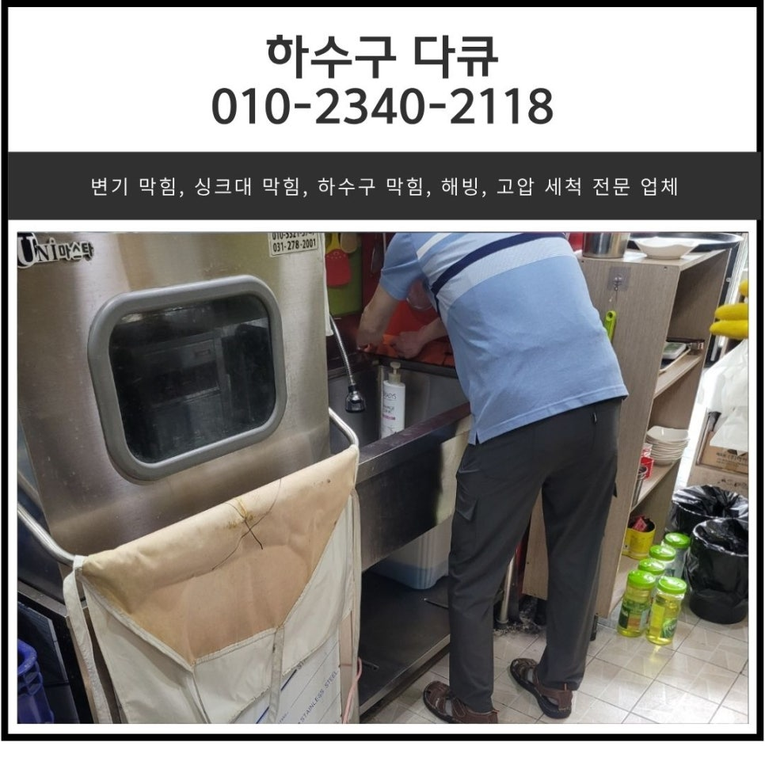
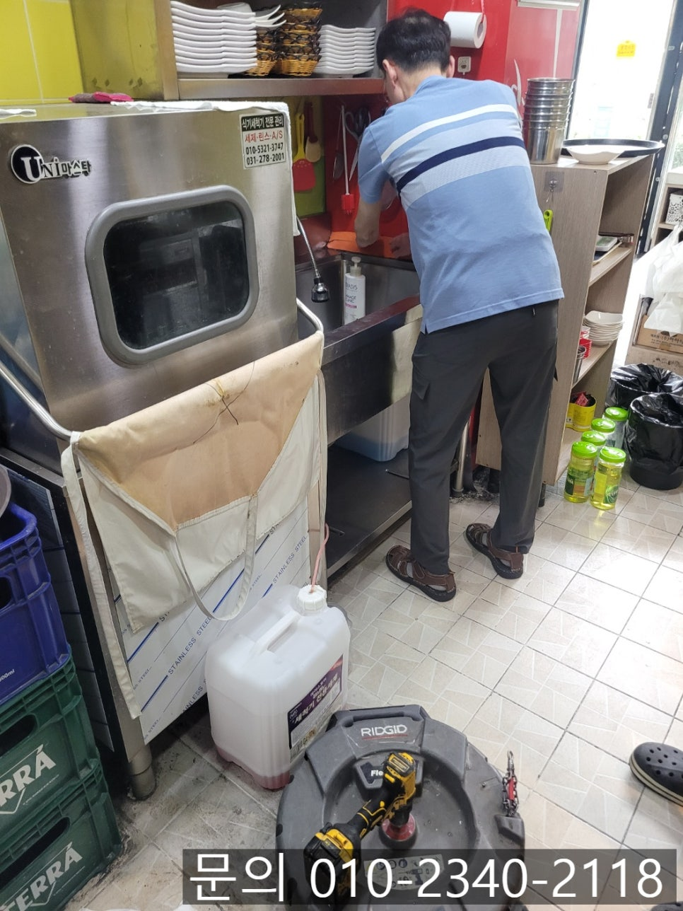
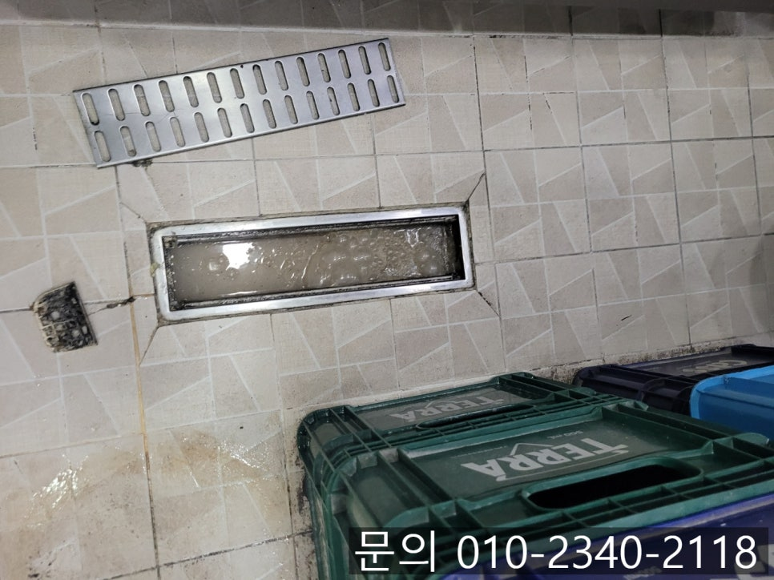
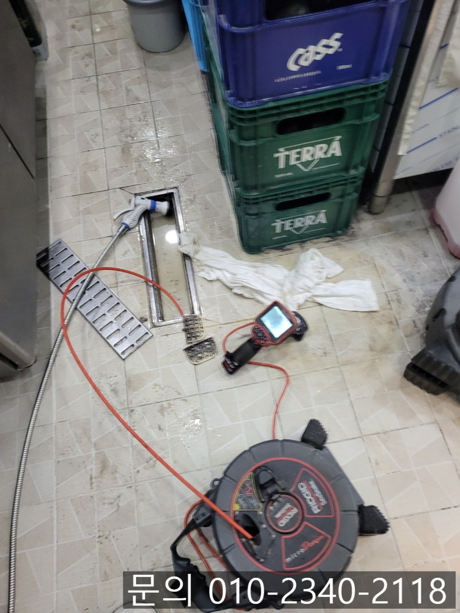
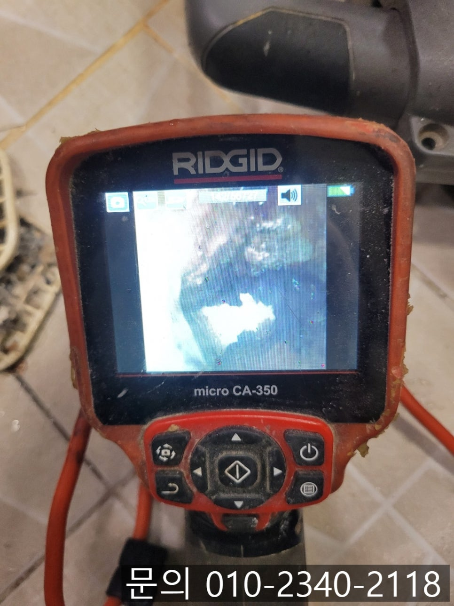
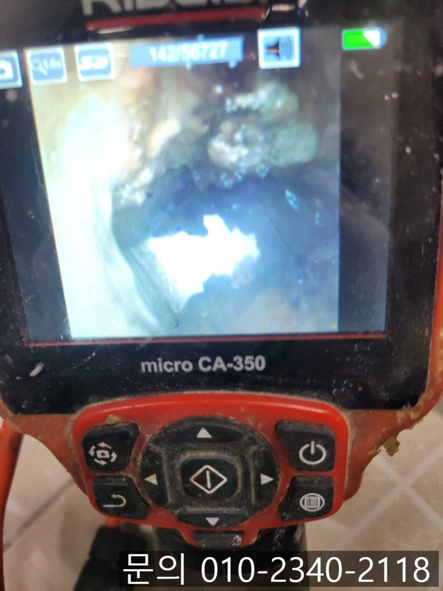
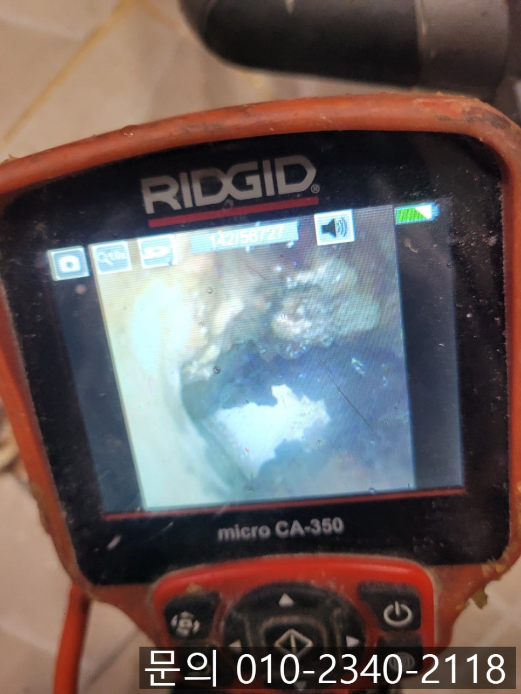

🏠 반송동 하수구 역류 화성 동탄동 식당 주방 하수도 배관 막힘 뚫어주는 설비 업체
화성 반송동 하수구막힘 전문 시공 후기

📋 작업 개요
- 위치: 화성 반송동, 반송동, 화성
- 서비스 유형: 하수구막힘, 배관막힘, 역류해결, 뚫는업체, 배관청소, 고압세척
- 작업 일시: 2025. 6. 19. 22:56
- 업체명: 하수구수사대 (010-5615-2118)
🔍 문제 상황
안녕하세요.
반송동 하수구 역류, 화성 동탄동 식당 주방 하수도 배관 막힘 뚫어주는 설비 업체 하수구 다큐입니다.
식당 주방의 경우 하루에도 수십, 수백 번 반복되는 조리 과정 속에서 엄청난 양의 물과 기름, 음식물 찌꺼기가 배수로 흘러갑니다. 특히 바닥에 설치된 트렌치 배관의 경우 음식을 조리하거나 청소하는 과정에서 흘러내리는 물과 이물질을 전부 받아내는 역할을 하게 되는데요.
이렇게 중요한 역할을 하는 트렌치 배관에서 하수가 역류한다면? 단순한 불편을 넘어서 매출 손실과 위생 문제로 이어질 수 있습니다.
실제로도 많은 식당 사장님들께서 " 바닥에서 물이 역류해 주방을 사용할 수가 없어요"라며 급하게 연락을 주고 계세요.
반송동 하수구 역류 문제의 경우 단순히 물이 안 빠지는 정도가 아니다 보니, 주방 바닥에 고인 오수는 악취를 발생시키고, 바닥이 미끄러워 넘어지는 사고의 원인이 됩니다.
오늘은 반송동 하수구 역류 현장을 소개해 드리면서, 역류의 주요 원인을 알려드릴게요.

🔎 원인 분석
💡 전문가 진단: 정밀 진단 장비를 사용하여 슬러지의 고착 여부를 판명하고 타격/세척 작업을 실시했습니다.
반송동에 위치한 한 식당에서 바닥에 위치한 하수구에서 물이 내려가지 않고 역류한다며 연락을 주셨습니다.
고객님께 주소를 전달받아 장비를 챙겨 30분 만에 현장에 도착해 보니 말씀해 주신 대로 하수구에 물이 고여있고 내려가지 못하는 상태였어요.
반송동 하수구 역류의 주요 원인은 다음과 같습니다.
기름때 누적
사용한 식기를 세척하거나 음식을 조리하는 과정에서 흘러나온 기름 성분이 배관 내벽에 달라붙으며 쌓이게 되면서 배관의 내경이 좁아지고 결국엔 역류 현상을 일으키게 됩니다.
2. 음식물 찌꺼기 축적
고기, 손질한 채소 조각, 쌀알 등 작은 음식 찌꺼기들이 흘러들어가 배관 안쪽에 쌓이면서 물의 흐름을 방해하고, 시간이 흘러 완전히 막히면서 결국엔 역류하게 됩니다.
3. 청소 미비

🔧 작업 과정
트렌치 내부는 기름 슬러지가 쌓이기 쉽다 보니 주기적으로 청소를 해줘야 하는데요.
눈에 잘 보이지 않는 구조이다 보니 청소가 제대로 되지 않아 내부에 기름 슬러지가 쌓이면서 배관이 막히게 됩니다.
반송동 하수구 역류 현장 트렌치 배관은 어떤 이유로 막힘이 발생한 건지 내시경 카메라를 진입시켜 확인해 보기로 했어요.
내시경 카메라가 배관 내부로 진입하자 예상했던 대로 기름 슬러지 덩어리를 확인할 수 있었습니다.
앞서 말씀드렸던 대로 기름 슬러지가 배관 내부에 쌓여 물길을 막아 역류했던 것 같아요.
화성 동탄동 식당 주방 하수도 배관 막힘 뚫어주는 설비 업체 하수구 다큐는 고객님께 내시경 카메라로 촬영한 배관 내부의 모습을 확인시켜드리고, 작업 계획, 소요시간, 발생되는 비용 등을 자세히 안내해 드리고 작업을 진행하기로 했습니다.
플렉스 샤프트 장비는 본체에 연결되어 있는 전동드릴을 작동시켜 배관에 진입한 노즐 끝에 달린 체인을 고속으로 회전시켜주면서 배관 내부를 청소하게 되는데요.
워낙 많은 이물질이 쌓여있는 상태이다 보니 한두 번의 작업으로는 끝나지 않았습니다.
다시 고속 회전하는 노즐이 배관 벽면에 붙은 기름 슬러지 등을 긁어내는 작업을 계속 진행해 나갔습니다.
플렉스 샤프트 장비는 배관 내경 전체를 원형으로 깎아내듯 청소하는 것이 특징입니다.
잘게 갈린 기름 슬러지와 각종 이물질들은 석션을 사용해 동시에 제거하는 과정을 반복해서 이어나갔어요.
화성 동탄동 식당 주방 하수도 배관 막힘 뚫어주는 설비 업체 하수구 다큐는 배관 청소를 마치고 내시경 카메라를 이용해 잔여 이물질은 없는지 고객님과 함께 확인해 봤습니다.


✅ 작업 완료
마지막으로 주방에서 많은 양의 물을 사용해 보면서 막힘이나 역류가 발생하지는 않는지 테스트까지 마친 후 작업을 마무리할 수 있었습니다.
식당 주방의 경우 하수구 막힘이 발생하게 되면 매출 하락으로 이어지는 경우가 발생할 수 있어 신속하게 원인을 파악하고 해결해야 합니다.
수많은 현장 경험을 바탕으로 어떤 문제도 완벽하게 해결해 드리고 있는 하수구 다큐와 함께 해결해 보세요!
경기도 화성시 동탄중심상가2길 8 4층 401-a51호




⚠️ 하수구 배관 막힘 예방 및 관리 가이드
- ✅ 머리카락, 비닐, 물티슈 등 물에 분해되지 않는 이물질은 하수구 유입을 절대 금지해 주세요.
- ✅ 하수구 거름망을 씌우고 모여진 이물질은 주기적으로 쓰레기통에 바로 비워주셔야 합니다.
- ✅ 배관 노후가 심할 경우 이물질이 더 쉽게 걸리므로 주기적인 배관 세척(고압세척 등)을 권장합니다.
- ✅ 작업 후 1년 이내 재발 시 하수구수사대에서 무상 A/S 보증 서비스를 제공합니다.
💡 핵심 정리
- 확실한 장비 작업(내시경 점검 및 샤프트 스케일링)으로 원인을 뿌리 뽑습니다.
- 작업 후 1년 이내에 동일한 부위 재발 시 100% 무상 A/S 서비스를 보장합니다.
- 서울 · 경기 · 인천 전 지역에 24시간 언제든 긴급 출동할 수 있도록 항시 대기 중입니다.
❓ 자주 묻는 질문 (FAQ)
🚨 화성 반송동 하수구막힘 문제로 고민이신가요?
정확한 원인 진단과 확실한 시공으로 재발 없는 해결을 약속드립니다.
24시간 긴급 출동 | 서울 · 경기 · 인천 전지역 | 1년 내 재발 시 무상 A/S